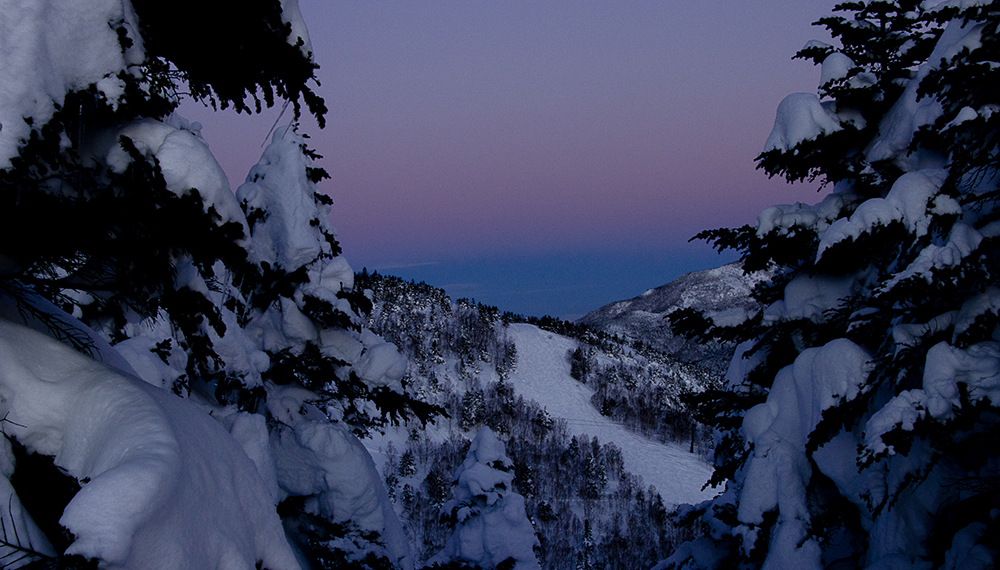
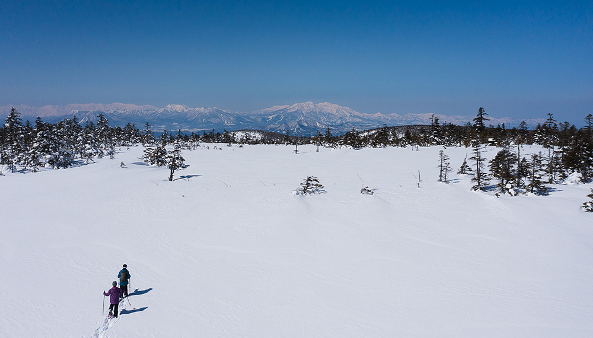

人生最高の一本


全ては「人生最高の1本」のために。
ファーストトラックを滑るための特別な体験を全力でサポートします。
海外で活躍するアスリートも愛用するマットレスをご用意した特別なスイートルームでおくつろぎいただき、館内ではお客さま専属のバトラーが帯同。夕食は、貸切個室で特別ディナーをご堪能ください。
翌日、早朝に「人生最高の一本」のシュプールを描きましょう。
春の人生最高の1分は、
焼額山で
- 
- 
滑ることではない別な雪山を楽しむ方へ贅を尽くした特別プラン。お客さま専用の圧雪車で山頂へ向かい、息をのむような絶景サンセットを独り占め。個室での特別なコース料理とスイートルームで満喫後、静寂な雪原で非日常体験を。
「白銀の世界」を眺める
贅沢な時間


志賀高原プリンスホテル東館の客室は全室ゲレンデビュー。広くゆったりとしたラグジュアリーな空間からは、白く輝く針葉樹と一面のゲレンデが望めます。誰にも邪魔されない、贅沢な時間をお過ごしください。窓際に腰かけると、正面には焼額山スキー場のシンボルともいえる「オリンピックコース」がご覧いただけます。夜はゲレンデが照明に照らされ、幻想的な風景に。
気温が裏付ける
ヤケビの雪質の良さ


針葉樹林が美しい焼額山スキー場は、2,000m以上の標高を誇ります。国内約500箇所のスキー場の中でもその標高があるのはわずか2.5％。その希少な環境が織りなす雪質の良さは世界中のパウダーフリークを虜に。寒冷な環境だからこそ見ることができる自然現象、サンピラーやダイヤモンドダストに出会えることも。
毎日が新鮮で楽しい
食の周遊


志賀高原プリンスホテルでは、長期滞在でも飽きることのないよう、6つのレストランをご用意。「今日はここ」「明日はあっち」と毎日違うレストランを選ぶ「食の周遊」をお楽しみいただけます。3館の異なるテーマのブッフェをはじめ、中国料理、居酒屋、ラーメンとお好みに合わせてお食事をお選びいただけます。ホテル各館を結ぶ、ホテルシャトルバスを利用して便利にご移動いただくことができます。
一切妥協のない
圧雪クオリティー


YAKEBIは徹底した圧雪品質にこだわり抜いています。最高の雪質に最高の圧雪、お客さまに提供するスキー体験が「一流」であるために。圧雪オペレーターの熟練者(マイスター)による技能教育やスキルチェックを定期的に実践するなど、圧雪品質を追求したゲレンデ造りを行っています。